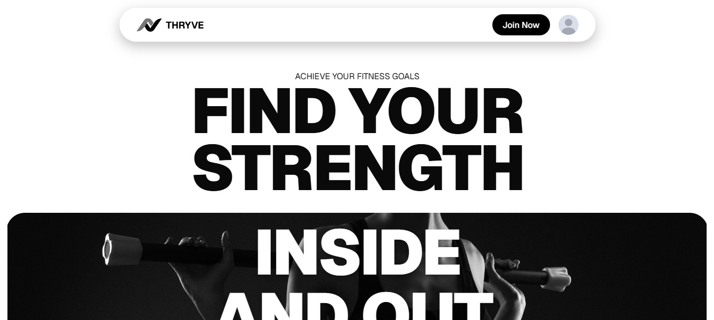

Kris Dane Madlambayan
Web Developer
Turning Ideas into Digital Reality
I craft clean, responsive web experiences that balance thoughtful design with practical functionality, focusing on solutions that feel intuitive, modern, and human-centered.
View PortfolioFeatured Project
Thryve
This project is designed to help students and beginners explore the world of IT and coding. It recommends easy-to-use platforms, tutorials, and tools to help anyone learn, practice, and build confidence in technology. Built using HTML, CSS, and JavaScript, it focuses on accessibility, user-friendly navigation, and clear guidance for learners.
View Project
